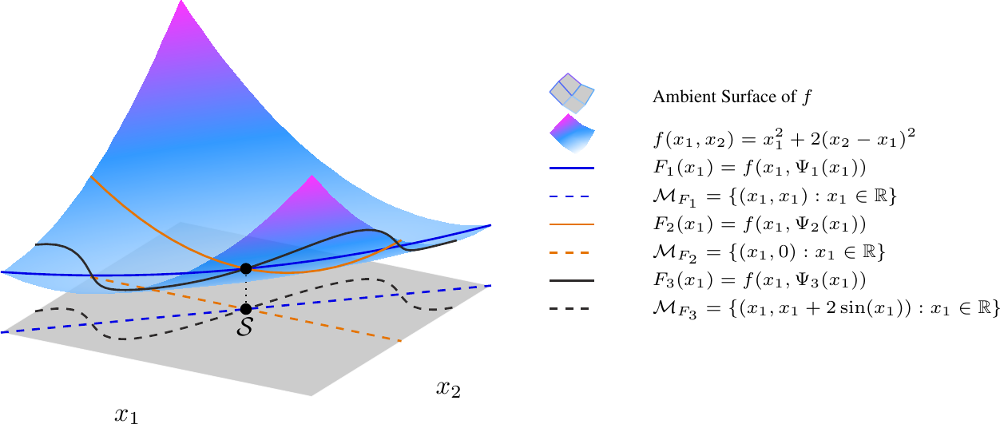
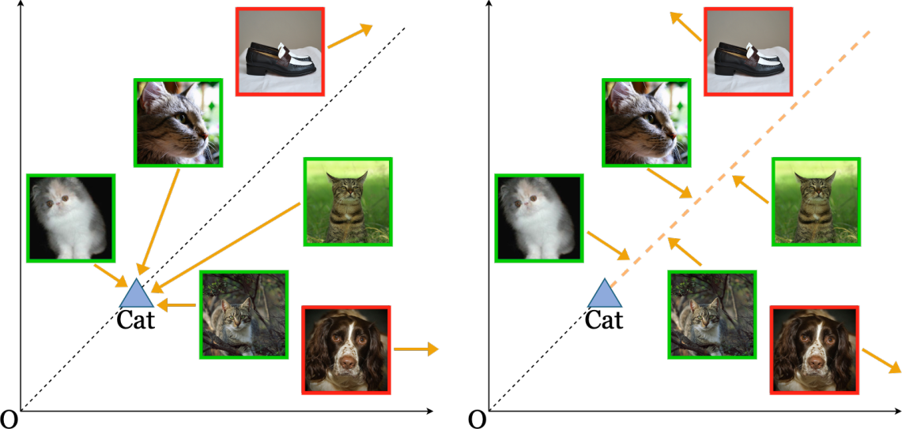
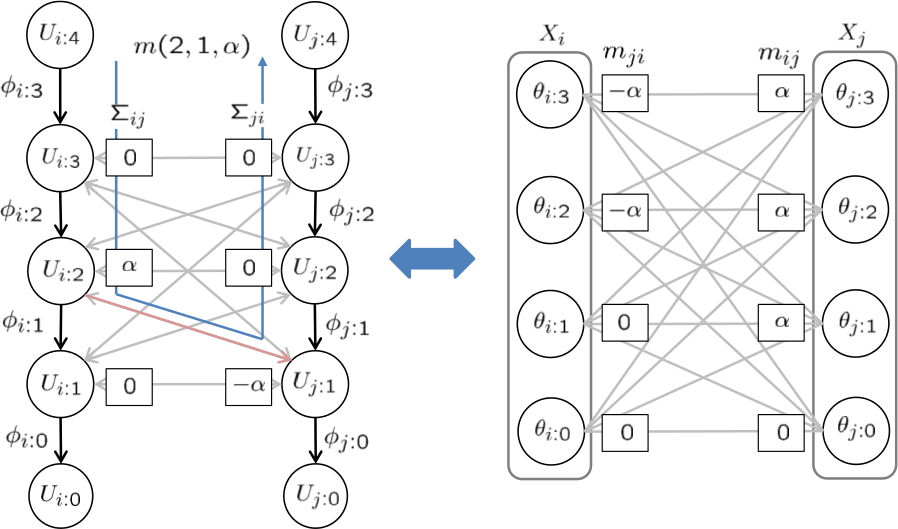

Protocol learning
Training large models across independent, heterogeneous machines.


Optimization & machine learning · Canberra, Australia
Founding Scientist at Pluralis Research
Visiting Researcher at Australian National University
I lead research at Pluralis, where we are making collective geo-distributed training of foundation models practical.
Training large models across independent, heterogeneous machines.
How architecture, initialization and optimization shape learning.

Smaller models and cheaper training through pruning, quantization and low-rank structure.

Learning visual representations and connecting them with language.

Efficient inference with graph cuts and message passing.

@inproceedings{ajanthan_asyncmesh_arxiv26,
title={{AsyncMesh: Fully Asynchronous Optimization for Data and Pipeline Parallelism}},
author={Ajanthan, Thalaiyasingam and Ramasinghe, Sameera and Avraham, Gil and Mohaghegh Dolatabadi, Hadi and P Hewa Koneputugodage, Chamin and Shevchenko, Violetta and Zuo, Yan and Long, Alexander},
year={2026},
booktitle={NeurIPS}
}@inproceedings{ramasinghe_protocol_neurips25,
title={{Subspace Networks: Scaling Decentralized Training with Communication-Efficient Model Parallelism}},
author={Ramasinghe, Sameera and Ajanthan, Thalaiyasingam and Avraham, Gil and Zuo, Yan and Long, Alexander},
year={2025},
booktitle={NeurIPS}
}ICOMP 2026 & ASCOMP 2026 · Casablanca, Morocco
November 2026Workshop on Distributed Training in the Era of Large Models · Thuwal, Saudi Arabia
November 2025I’ve mentored researchers across academia and industry and some of the names are listed below.
A few personal highlights from ICOMP 2026 in Casablanca. I got to see legends like Michael Jordan and Anatoli Juditsky in person and share the stage with them. Anatoli’s talk on the ellipsoid algorithm and linear programming was so refreshing and took me back to my PhD days. MJ raised some thought-provoking points about how to think about intelligence.
Just as memorable were long conversations about optimization methods, local-step methods, hybrid models, and protocol learning. Thanks to the organizers for the invitation and a great time in Casablanca.

Very nice write up on training on compute islands. Also it briefly covers some essential techniques for low-bandwidth training. I believe "beyond datacenter distributed training" is a spectrum and inter-datacenter (eg, this one, decoupled diloco) is on one side and training on heterogeneous consumer devices (eg, Agora) is on the other extreme. Good to see more efforts in this.
Almost two orders of magnitude faster than the vanilla baseline. Looking forward to seeing who gets it under 1 hour and how.

I've been reading a lot of these suggestions and thinking about this. I think we should accept all papers that are correct and meets a minimum quality bar (claims are correct, experiments validate the claims, and the paper is correctly positioned in the literature and pushes the boundary in some aspect) without presentation in a conference.
This process could be automated with AI-agents (there may be some noise which is fine) and human peer-review is only used to select papers from this accepted pool for poster/oral presentations in a conference. This should incentivize people to submit high-quality work so that they get presentations and not a mere accept -- which precludes them from submitting somewhere else reducing the burden on authors and reviewers. Also, we could make it mandatory that all papers with experiments should have the code to reproduce the results and AI-agents verify this and there could be random audits (due to high cost of ML experiments) which actually run the code and flag any submissions which cannot be reproduced and the authors' credibility will be affected (eg., display stats on their google scholar profile).
Finally, we should also classify AI-written papers which meets the above quality bar and have a separate venue for them (eg., in open review or a new arxiv for AI-papers). This allows AI discoveries to be published quickly but not contaminate other conferences and allows the field to move faster if any such discoveries are useful.
We did a system test at 13B with substantial changes to Agora to make it more efficient and cheaper. We now want to see its scalability (in no of participants) and where it breaks.
Completely agree with the sentiment. However, one aspect that is overlooked is when the model provider gives away the weights for free, they lose the financial incentive (at least partially).
This is where we think the real gap is and we require economically sustainable open model development. This is the mission of @Pluralis
RL roll-outs on Macs! Imagine the compute this unlocks with idle Macs around the world. Excellent work Erfan!
ajaneng {at} gmail {dot} com